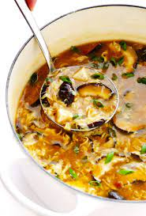

Chinese Hot and Sour Soup
Origin: China Source: Traditional Recipe Category: Soup Chinese Hot and Sour Soup (酸辣汤) is a popular and flavorful soup known for its spicy and tangy taste. It's made with a variety of ingredients including tofu, mushrooms, and bamboo shoots.
Recipe Ingredients
- Tofu
- mushrooms
- water
- pork
- bamboo shoots
- soy sauce
Recipe Steps
- Boil
- Simmer
- Cooking
- Dipping sauces